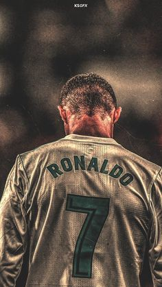

Ele é mais completo que o Messi, ele finaliza com as duas pernas Cristiano é mais alto, consequentemente, um excelente cabeceador, além de ser mais rápido e ter um arranque.

ComentarRetweetarCurtir
Trending Topics
# Sport Club Corinthians Paulista • Fantástico • Dimas Teixeira
# Basquetebol do Clube de Regatas do Flamengo • NBB
# Seleção Espanhola de Futebol • Brasil
# Jogo de apostas • Franca Basquetebol Clube • Georginho de Paula
# Golden State Warriors • Minnesota Timberwolves • NBA